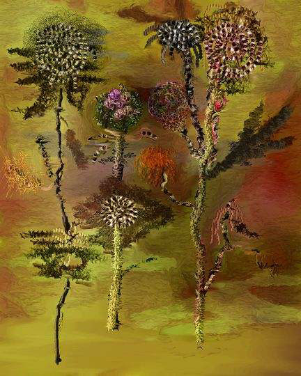
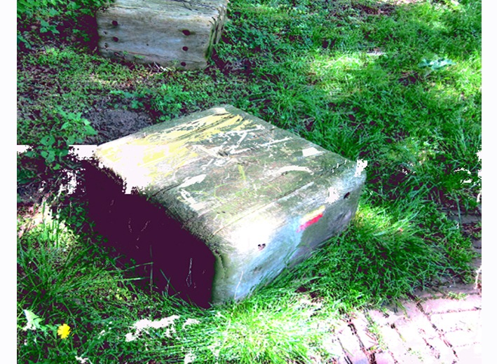
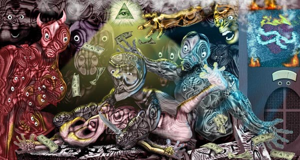
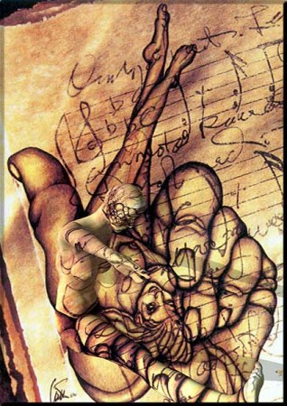
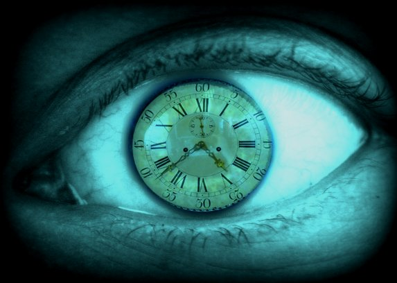
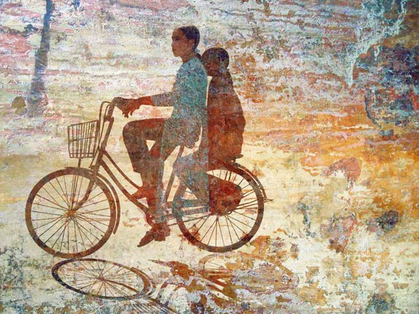
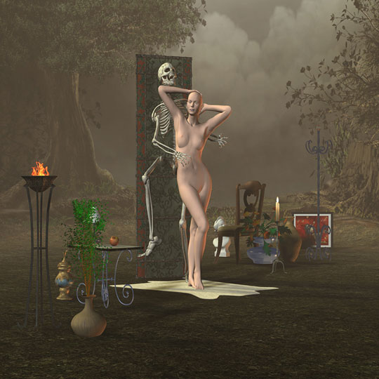
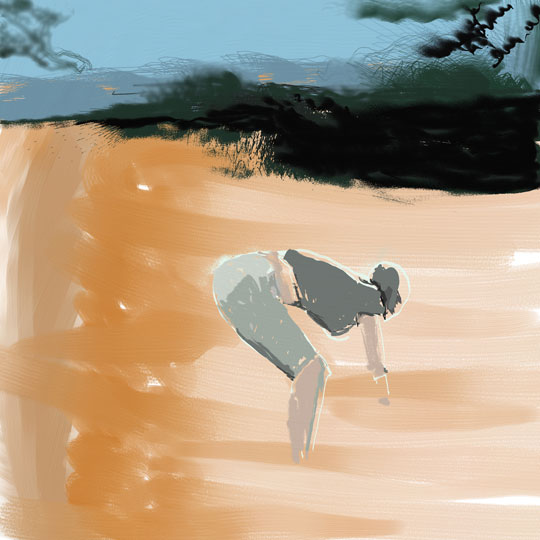

IMAGES OF THE DAY 87
11/11/2023 - 11/20/2023

11/11/2023
Mixed Technology
Art as Discovery
Flowers
by John Hughson
Click image to access artist's full exhibit

11/12/2023
Mixed Technology
Digital Art: Imaginary Landscapes
Whocome
by Immo Jalass
Click image to access artist's full exhibit

11/13/2023
Mixed Technology
Thematic Work from 2006
Sin Testigos
by JD Jarvis
Click image to access artist's full exhibit

11/14/2023
Mixed Technology
3D Rendering
People and Places
Untitled
by Gerhard Katterbauer
Click image to access artist's full exhibit

11/15/2023
Mixed Technology
Surrealism and New Media
Clockeyed
by Alan King
Click image to access artist's full exhibit

11/16/2023
Mixed Technology
States of Mind
Hue Girls on Bike
by Eric W. Kuns
Click image to access artist's full exhibit

11/17/2023
Mixed Technology
3D: Radical Romantic
Beauty and Skeleton
by Jawek Kwakman
Click image to access artist's full exhibit
11/18/2023
Mixed Technology
Diversity of Form
Red Wheel
by Glanfyll Lewis
Click image to access artist's full exhibit


11/19/2023
Mixed Technology
Drawn and Painted Art
Painting My Garden
by Myriam Lozada-Jarvis
Click image to access artist's full exhibit
11/20/2023
Mixed Technology
Digital Collage
Salve Saida
by Rocha Maia (filho)
Click image to access artist's full exhibit

BACK TO IMAGES OF THE DAY 86
NEXT